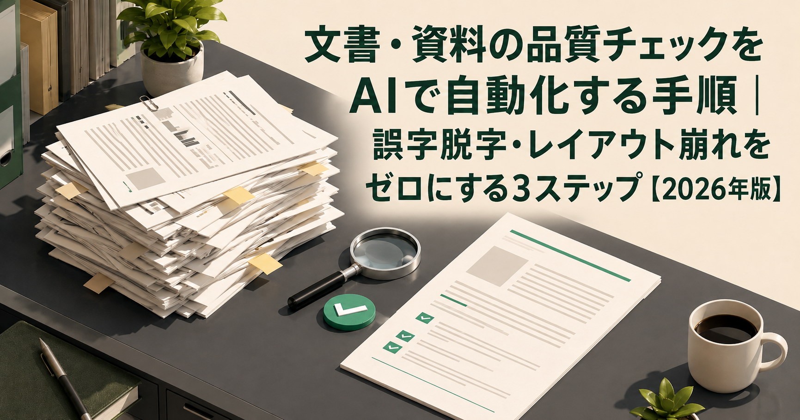
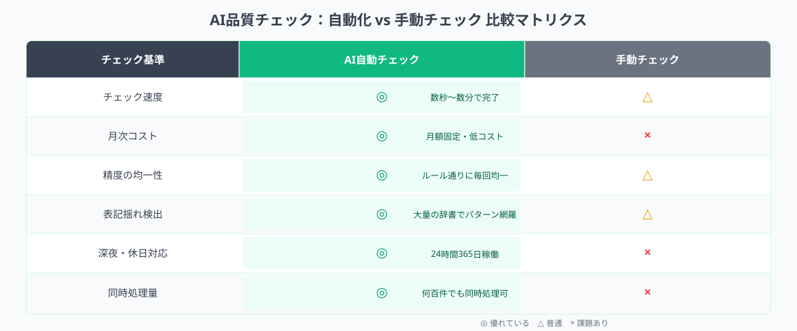
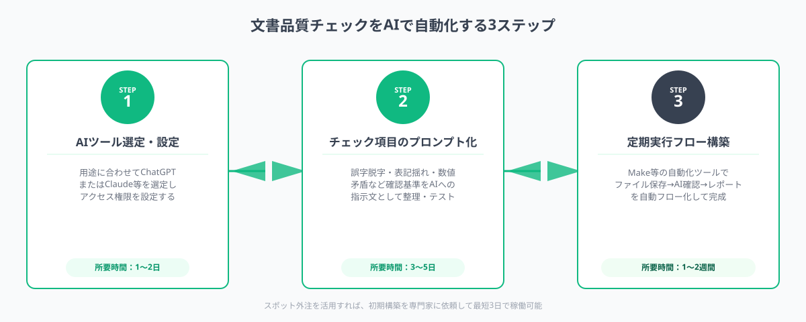

文書・資料の品質チェックをAIで自動化する手順｜誤字脱字・レイアウト崩れをゼロにする3ステップ【2026年版】
文書・資料の品質チェックをAIで自動化すると、誤字脱字・表記揺れ・レイアウト崩れの検出工数を最大90%削減できます。ChatGPTやClaudeにチェックルールをプロンプト化して渡すだけで、プログラミング不要・今日から運用可能です。本記事では「ツール選定→プロンプト化→定期実行フロー構築」の3ステップを具体的な実例とともに解説します。
本記事は2026年8月時点の情報に基づいています。
「AI品質チェックを導入したいが、何から手をつければいいか分からない」という段階でも大丈夫です。
ANKENでは要件が固まっていない段階からご相談いただけます。しつこい営業は一切ありません。初回相談無料・1時間以内にご返信します。
無料で相談する →なぜ今、AI品質チェックが必要なのか

メディア編集部、マーケティング部門、製造業の品質保証部門、社内文書を大量に扱う企業——いずれも「ヒューマンエラーによる品質問題」に悩み続けています。
従来の品質チェックは、担当者が目視でドキュメントを読み込む方法が中心でした。しかしこの方式には3つの限界があります。
- スケールしない：文書量が増えるほど担当者の負荷が線形に増加する
- 属人化する：「〇〇さんしか全体チェックができない」状態が発生する
- 見落とす：連続読みによる注意力低下で、同じ誤字を複数回見逃す
2026年時点のAIツール（ChatGPT-4o・Claude 3.5 Sonnet等）は、日本語の文章校正・表記揺れ検出・数値の矛盾チェックにおいて実務水準に達しています。正しくプロンプトを設計すれば、1文書あたり30分かかっていたチェック作業を2〜3分に短縮できます。
AIツール（ChatGPT・Claude等）に品質基準をプロンプトとして与え、文書・資料の誤字脱字・表記揺れ・数値矛盾・レイアウト崩れを自動で検出・修正候補を出力する仕組みのこと。プログラミング不要で導入でき、既存の業務フローに組み込める。
STEP 1：AIツール選定と設定
品質チェック自動化の最初のステップは、用途・資料種別に合ったAIツールを選ぶことです。ツール選定を誤ると、「プロンプトを工夫しても精度が上がらない」という壁にぶつかります。
主要ツールの特性比較
ChatGPT（GPT-4o）：日本語の文章校正・言い回しの改善に強い。長文ドキュメントの一括処理に向き、プロンプト構造の自由度が高い。月額3,080円（Plus）から利用可能。
Claude（Sonnet・Opus）：長いコンテキストウィンドウが特徴で、100,000字超の文書でも一括処理できる。規則に厳密に従う傾向があり、チェックルールが多い場合に適している。月額約3,000〜7,500円。
Gemini for Google Workspace：GoogleドキュメントやGmailとネイティブ統合されており、Docs内のドキュメントをそのままチェックさせるワークフローが組みやすい。既存Workspaceユーザーには導入コストが低い。
選定のポイント
- 資料の長さ：1文書あたり数万字を超える場合はClaudeが有利。数千字程度ならChatGPTで十分
- 既存ツールとの相性：Googleドキュメントを多用している場合はGemini、Notionやスプレッドシート連携ならChatGPTのAPIが向く
- チェックルールの複雑さ：ルールが10項目以上ある場合はClaudeが安定しやすい
初期設定：チェック対象を整理する
ツールを選んだら、チェック対象と判定基準を一覧化します。以下が典型的な分類例です。
- 語彙・表記：誤字脱字、表記揺れ（「ウェブ」と「Web」が混在等）、専門用語の統一
- 数値・事実：本文と図表の数値不一致、年月日の矛盾、単位の誤り
- 構造・レイアウト：見出し階層の崩れ、箇条書きの統一、フォントや余白の不一致（PDFチェック）
- 禁則・スタイル：禁則処理違反、一文の長さ、受動態の多用など社内スタイルガイド違反
この一覧が次のSTEP 2（プロンプト化）の素材になります。最初から全項目を網羅しようとせず、「最もミスが多く、影響が大きいカテゴリ」から3〜5項目に絞るのがポイントです。
STEP 2：チェックルールのプロンプト化

ツール選定が終わったら、STEP 1で整理したチェックルールをAIが理解できるプロンプトに変換します。ここが品質チェック自動化の核心です。
効果的なプロンプトの構造
品質チェック用プロンプトは「役割定義→チェック項目→出力形式」の3部構成にすると安定します。
あなたは日本語文書の品質チェック担当者です。以下のルールに従って、入力された文書をチェックしてください。
【チェック項目】
1. 誤字・脱字・変換ミスを検出する
2. 「Web/ウェブ」「AI/エーアイ」等の表記揺れを検出する（正規表記はWebとAI）
3. 数値と単位の組み合わせに誤りがないか確認する
4. 一文が100字を超えている箇所を指摘する
【出力形式】
問題箇所を「行番号：元の表現 → 修正候補（問題カテゴリ）」の形式でリスト出力してください。問題がない場合は「チェック完了：問題なし」と出力してください。
プロンプトのチューニング手順
初回のプロンプトは完璧でなくて構いません。以下のPDCAで改善します。
- 初版プロンプトでテスト：過去に問題が発生したドキュメント5件程度でテストし、AIの検出結果を人間のチェック結果と照合する
- 見落とし・誤検知を記録：「見逃したミス」と「誤ってエラー扱いした箇所」をリストアップする
- プロンプトに例外ルールを追加：誤検知パターンは「ただし〜は正しい表記として除外する」の形でプロンプトに追記する
- 3〜5回繰り返す：精度が安定したら本番運用へ移行する
カテゴリ別のプロンプト設計のコツ
レイアウト崩れの検出（PDF・HTML）：テキストをAIに渡すだけでなく、「見出し階層が正しいか」「表のセル数に不整合がないか」をMarkdown形式に変換してからチェックさせると精度が上がります。
数値矛盾の検出：「本文とグラフの数値を対照させて」という指示に加え、「数値が出てくるすべての箇所を表形式で抽出してから矛盾を探す」という二段階処理を指示すると見落としが減ります。
製造業の規格文書：品番・型番・仕様値など固有のルールが多い場合は、プロンプト冒頭に「用語辞書」として正規表現パターンを列挙する方法が有効です。
STEP 3：定期実行フローの構築
プロンプトが安定したら、「毎回手動でコピペして実行する」作業から脱却し、文書公開前の品質チェックが自動で走る仕組みを作ります。
ノーコードで実現する自動実行フロー
プログラミング不要で使える主な連携方法は以下の3パターンです。
パターンA：Googleスプレッドシート + ChatGPT API
Googleスプレッドシートの「チェック対象テキスト」列にドキュメントを貼り付けると、隣のセルに自動でAIチェック結果が表示される仕組み。Google Apps Script（GAS）を数十行書くだけで実現でき、エンジニア不要のケースも多い。チェック結果はそのまま社内共有用のスプレッドシートとして機能するため、レビュープロセスへの組み込みが簡単。
パターンB：Slack + AIツール連携
Slackの特定チャンネルにドキュメントを貼り付けると、ボットが自動でAIチェックを走らせて結果を返信する形式。編集部やマーケティング部門のように、Slackを起点にドキュメントレビューを回しているチームに向く。Make（旧Integromat）やZapierを使えばノーコードで構築できる。
パターンC：Notion → n8n → AI
Notionのデータベースにドキュメントが追加されたタイミングでAIチェックが自動実行され、チェック結果がプロパティに書き戻される。コンテンツ管理をNotionで行っているメディアや企業に適している。n8nはオープンソースのワークフローツールで、API接続の知識があれば低コストで運用できる。
品質ゲートとして組み込む
最も効果的な運用は、文書の「公開・送付・印刷」などの最終アクションの前に品質チェックを必須ステップとして組み込むことです。
- メディア記事：公開前にCMSから自動でチェックが走り、エラーがある場合は公開ボタンがロックされる（要軽量な開発）
- 提案資料：Slackで「完成」スタンプを押したタイミングでチェックが起動し、担当者にDM通知する
- 製造業の検査報告書：Sharepointに保存したタイミングでPower Automateが連携し、AIチェック結果をメタデータとして付与する
運用上の注意点
AIの品質チェックは万能ではありません。導入後は以下を定期的に見直します。
- 誤検知率を月次でモニタリング：誤検知が増えてきたらプロンプトの更新タイミング
- 新しいルールの追加：社内スタイルガイドが更新されたら、プロンプトも同時に更新する運用ルールを設ける
- 最終確認は人間が行う：AIチェック後に人間が最終確認する「ダブルチェック」体制を維持することで、品質の信頼性が高まる
活用事例3選
事例1：Webメディア編集部の校正工数を80%削減
月間200本以上の記事を公開するWebメディアで、編集者一人当たりのチェック工数が月80時間を超えていた。ChatGPT APIをGoogleドキュメントに連携させ、記事提出時に自動で誤字脱字・表記揺れ・禁則処理をチェックする仕組みを導入。初月から月60時間の削減に成功し、編集者が本来の編集作業（構成改善・情報精度確認）に集中できる体制を実現した。
事例2：製造業の品質報告書における数値矛盾ゼロ化
月100件超の製品品質報告書を作成していた製造業で、数値の転記ミスによるクレームが年5件発生していた。Claudeに測定値・合否判定・図表数値の整合性チェックをさせるプロンプトを開発し、検査員が報告書を提出する前にSlackボット経由でAIチェックが走る仕組みを構築。導入後6ヶ月でクレーム0件を達成した。
事例3：不動産会社の物件資料チェックを自動化
物件案内資料（PDF）の数値誤り（面積・価格・築年数の転記ミス）が月10〜15件発生しており、修正対応に年間200時間以上かかっていた。物件データベース（スプレッドシート）とAIを連携させ、資料作成後に自動で数値の整合性チェックを実施。導入3ヶ月で転記ミスを92%削減し、年間工数を180時間削減した。
よくある質問
- Q. AI品質チェック自動化の導入費用は？
- A. ChatGPT PlusやClaudeプランを活用する場合、月額3,000〜5,000円程度から始められます。専用ツールを追加しても月1〜3万円以内が一般的です。
- Q. 誤字脱字以外にどんな品質チェックができますか？
- A. 表記揺れの統一、読み仮名の誤り、数値の矛盾、レイアウト崩れ、禁則処理違反なども自動検出できます。
- Q. 非エンジニアでも導入できますか？
- A. はい。ChatGPTやClaudeのチャット画面にプロンプトを貼るだけで始められ、プログラミング不要です。
まとめ
文書・資料の品質チェック自動化は、次の3ステップで実現できます。
- AIツール選定と設定：資料の長さ・既存ツールとの相性・チェックルールの複雑さを基準にChatGPT・Claude・Geminiから選定し、チェック対象を一覧化する
- チェックルールのプロンプト化：「役割定義→チェック項目→出力形式」の3部構成でプロンプトを設計し、過去の問題事例でテスト・チューニングを繰り返す
- 定期実行フローの構築：Googleスプレッドシート・Slack・Notion等の既存ツールと連携させ、文書公開前の品質チェックを自動化する
導入に迷ったら、まず「最もミスが多く影響が大きい1カテゴリ」だけに絞ってプロンプトを作り、チャット画面でテストすることから始めてください。小さく始めて、効果を確認しながら対象を広げるのが最短の成功パターンです。
自動化フローの設計・API連携・カスタムプロンプト開発をスポット外注したい場合は、ANKENにご相談ください。
AI品質チェックの自動化・プロンプト設計・API連携をプロに任せたい方へ
ANKENは文書品質チェック自動化の開発経験を持つエンジニアとスポットでマッチング。要件定義からフロー構築まで、単発で依頼できます。
無料で相談する →